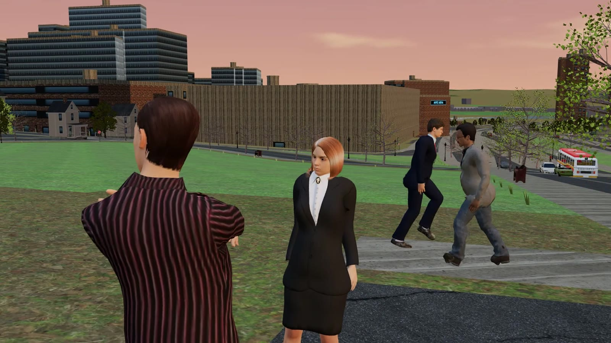

Act I · The Dome · out now
Somebody in the Capitol is on the payroll
An envelope you ran last month wasn't a menu. Holloway Freight keeps a second set of books, and a line every month goes to "E.H. consulting". Follow the money from the Corning Tower to the Port of Albany, keep a detective close enough to use and far enough to trust, and get your fixer out of the city before the roads close.
Dana WhitlockYour fixer. Knows every back door in Albany and owes nobody a straight answer.
Det. Lena RuizWants the ledger more than she wants you. For now.
Ellis HollowayRuns the trucks. Pays the people who look the other way.
